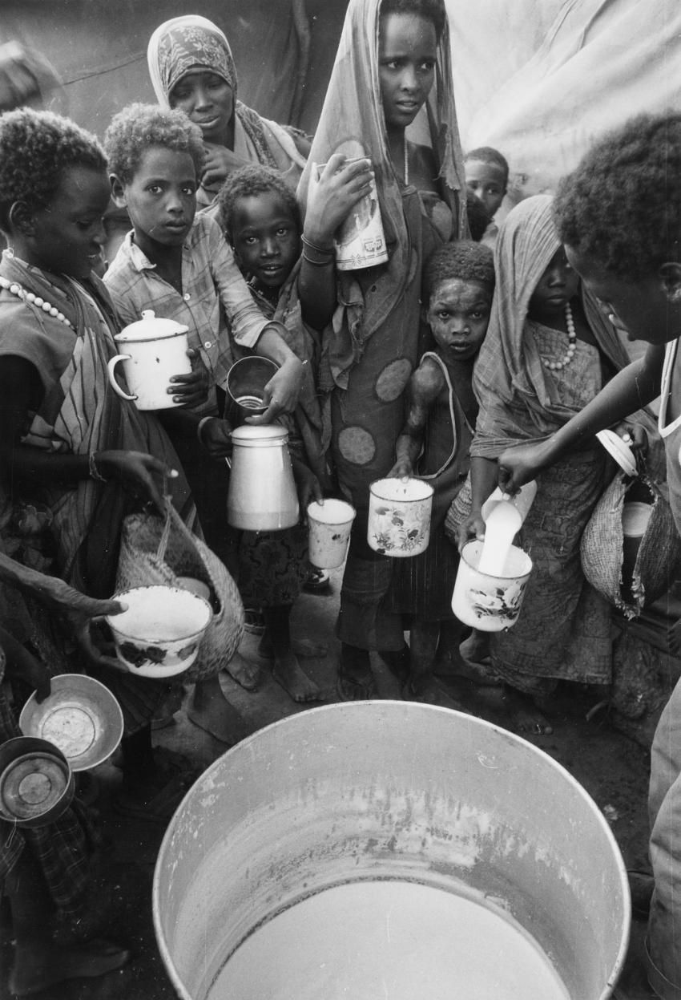
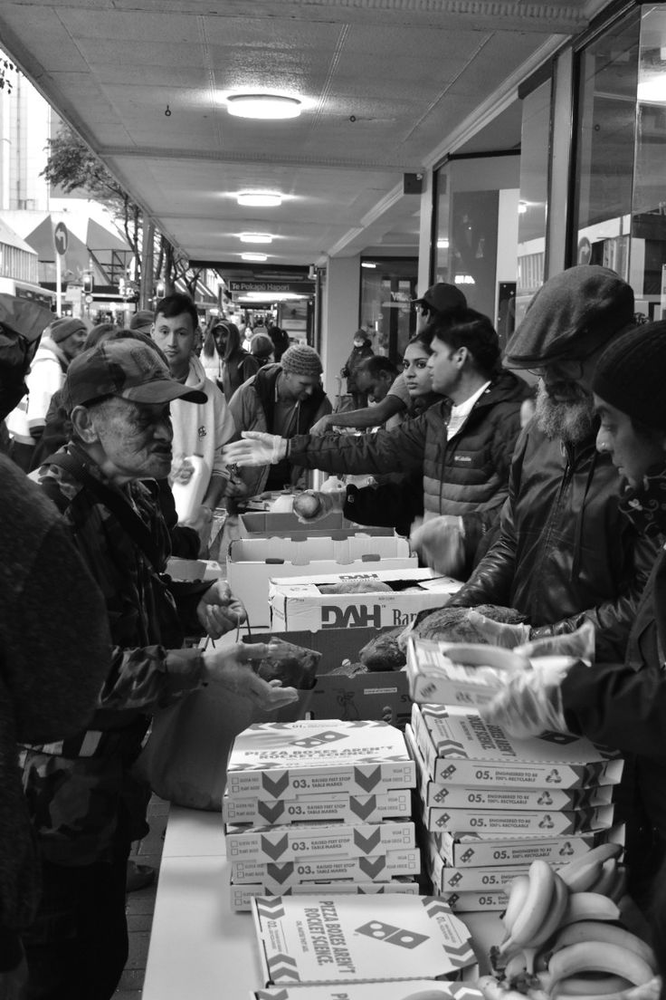
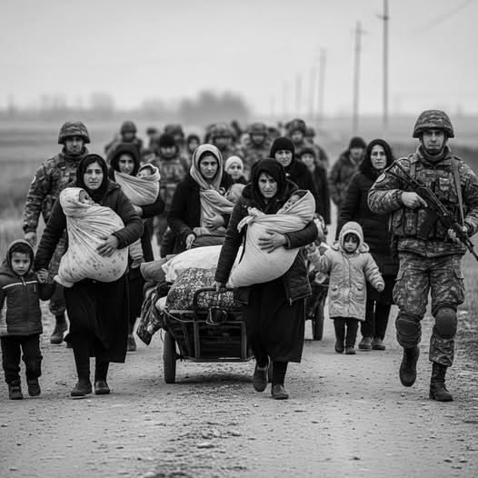
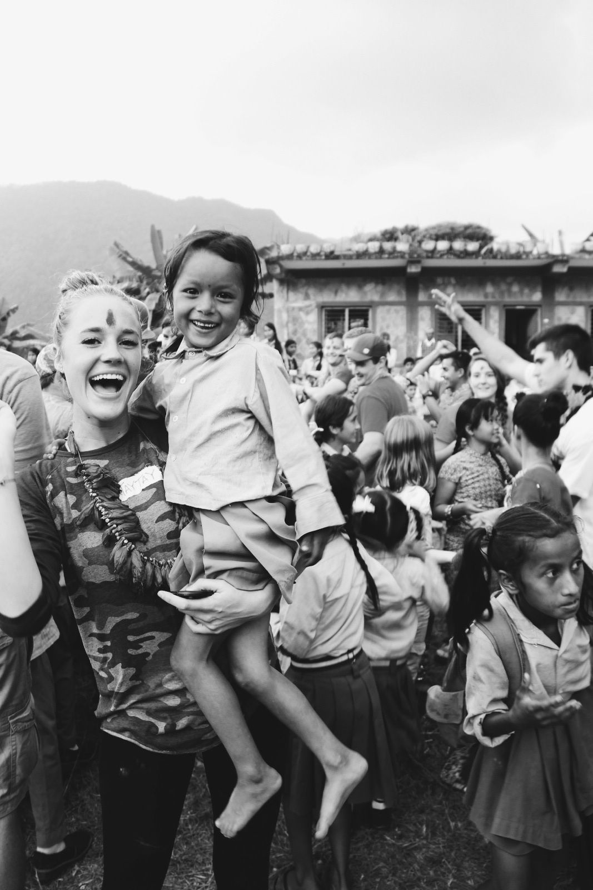

Somos una fundación comprometida con apoyar a personas y familias que atraviesan dificultades económicas o que han sido afectadas por desastres naturales.
Tu ayuda transforma vidas
Comprometidos con un mañana mejor.
¿Quiénes Somos?
Conoce a nuestros proyectos

Apoyar a personas en situación vulnerable mediante la solidaridad, la empatía y la colaboración, ofreciendo recursos y acompañamiento para mejorar su calidad de vida.

Ser una fundación reconocida por transformar vidas y construir comunidades más unidas, solidarias y resilientes.

Trabajamos con empatía, respeto y responsabilidad, buscando que cada acción contribuya al bienestar de las personas y sus comunidades.

Creemos que los pequeños actos de bondad pueden generar grandes cambios, súmate a Alma Solidaria y ayúdanos a construir un futuro mejor.